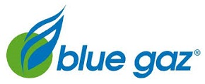
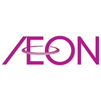

Lowongan PT. Blue Gas Indonesia
Dibutuhkan IT Network & Infrastructure (Senior Staff)

Kualifikasi
• Diutamakan memiliki Pengalaman di bidang yang sama(IT Infrastructure) Min. 2 Tahun;
• Usia Maksimal 28 Tahun;
• Pendidikan Min S1 ( Tehnik Informatika / Tehnik Komputer / Sistem Informasi );
• Menguasai network LAN / WLAN;
• Menguasai Problem Solving Hardware dan Software;
• Menguasai Mikrotik / Cisco;
• Customer Oriented, Good Interpersonal, Teamwork, & Fast Learning;
Job Description
• Memelihara jaringan komputer agar terkoneksi dengan baik dan tanpa ganguan.
• Memelihara perangkat server agar bekerja dengan baik dan bisa diakses.
• Mengelola problem hardware dan software user (PC/NoteBook/Printer/Sistem operasi, dll) agar tertangani dengan baik dan cepat.
• Seluruh komplain user mengenai hardware, software & jaringan dapat diselesaikan dengan baik dan cepat sesuai standar
• Memelihara semua aplikasi software berjalan dengan baik.
Pengajuan Lamaran:
• Apabila Anda Berminat, Silahkan mengirimkan resume Anda / CV, ijazah pendidikan dan transkrip ke E-mail : bluegas.id@gmail.com
Diposting tanggal 23 Des 2020
||
Lowongan AEON Credit Service Indonesia
Dibutuhkan IT Infrastructure Engineer

Job Description
• Provide assistance and support to user's issues and problem
• Daily administration and monitoring of IT Infrastructure, including but not limited to: desktops, network, and data center appliance and service deliverables by infrastructure service providers such as ISPs
• Project support and consultation related to infrastructure development and deployement
Kualifikasi
• Age around 21 to 35 years old
• Minimum Diploma degree with Information Technology Major or any related major
• Basic command in English (both oral and written)
• Desktop and server operating system (windows 7, windows 10, windows server, various linux distribution such as RHEL, Ubuntu, Debian, and their derivatives.
• Knowledge in scripting and automation are preferred. Experience in Red Hat High Availability Cluster will be an advantages
• X86-64 Hypervisor solution such as VMWare, KVM, etc. Knowledge and experience in containerization would with docker or hosted kubernetes solution will be an advantages
• Basic knowledge and understanding in progamming language and RDBMS would an advantage.
• Knowlegde and experience in administering Microsoft solution such as Active Directory and Microsoft Exchange
• Knowledge and understanding of the concept of backup system, TCP/IP (routing, subnetting), internet technologies and protocols such as DNS, email protocol, HTTP/S
• Knowledge and understanding of IT concept such as IT Security, Governance and audit, ITSM and Business Continuity
• Willing to work in shift and overtime, travel out of Jakarta
• Experience in leading small team or internal project
Diposting tanggal 05 Jan 2021